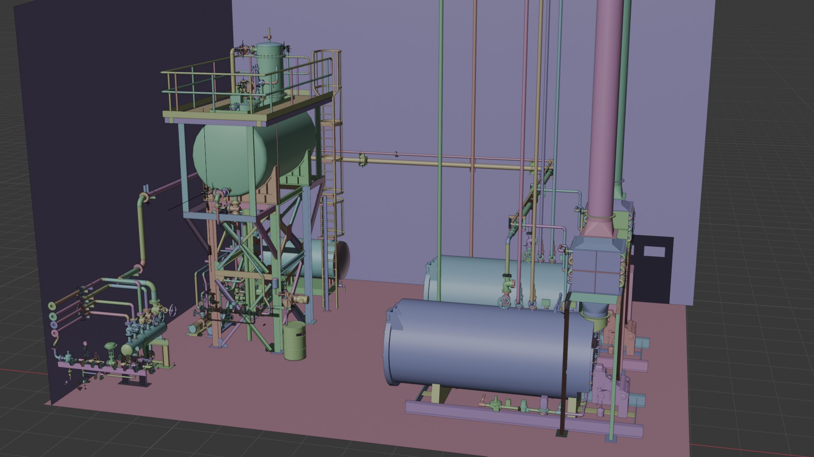

サービス紹介
Captzは、最新の3D計測技術とAI技術を駆使し、空間データの取得から活用まで、
トータルソリューションを提供しています。
01
高精度3D計測サービス
精度±2mmの高精度スキャンで、あらゆる空間を正確にデジタル化

サービス内容
- 建築設備の3Dスキャン
- 工場・プラント設備の詳細計測
- 文化財・歴史的建造物のデジタル保存
- BIM/CIM向けの現況データ取得
測定仕様
| 計測精度 | ±2mm |
|---|---|
| 計測範囲 | 0.5m～350m |
| 計測速度 | 最大100万点/秒 |
| 出力フォーマット | PLY, PTX, E57, RCP |
02
データ処理・モデリング
AI技術による高速・高精度なデータ処理で、活用までの時間を大幅短縮

サービス内容
- 点群データの統合・最適化処理
- 3次元CADモデルの作成
- BIM/CIMデータの構築
- クラウドベースのデータ管理
処理能力
| 対応点群サイズ | ～100億点 |
|---|---|
| 処理時間 | 標準48時間以内 |
| 対応CAD形式 | DWG, RVT, IFC他 |
| データ保管期間 | 最大10年 |
03
専門的なコンサルティング
空間データの効果的な活用方法を、実績豊富な専門家がご提案
サービス内容
- 設備更新計画の策定支援
- 3D計測導入コンサルティング
- 予防保全計画の立案
- デジタルツイン構築支援
サポート体制
| 対応業種 | 製造、建設、不動産他 |
|---|---|
| 担当者経験 | 平均10年以上 |
| サポート形態 | 訪問・オンライン |
| 対応エリア | 全国対応可能 |
導入の流れ
STEP 1
ヒアリング
現状の課題や要望をお伺いし、最適なソリューションをご提案します。
STEP 2
現地調査
計測対象の調査を行い、具体的な計測計画を立案します。
STEP 3
計測実施
高精度3Dスキャナーによる計測を実施します。
STEP 4
データ処理
取得データの処理・モデリングを行います。
STEP 5
納品・活用支援
成果物の納品と活用方法のレクチャーを行います。
お客様の声
製造業
設備管理部長
老朽化した工場設備の更新計画に活用しました。3D計測により、図面には記載されていない配管の干渉も事前に把握でき、工期の短縮につながりました。
建設業
工事責任者
リノベーション工事の際に利用しました。現況を正確に把握できたことで、予想外の手戻りが大幅に減少し、予算内での計画遂行が可能になりました。
不動産管理
施設管理課長
複数の商業施設の管理に活用しています。設備の状態を3Dデータで一元管理できるようになり、メンテナンス計画の策定が効率化されました。
技術資料
3D計測導入ガイド
3D計測技術の基礎から活用事例まで、詳しく解説しています。
データ活用事例集
様々な業界での活用事例をまとめた資料です。
技術仕様書
3D計測機器の詳細な仕様と性能についての資料です。